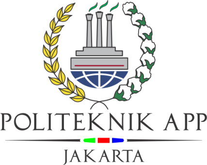

Pengaruh Ekspor Beras di Thailand terhadap PDB negara Thailand
Metode Penelitian Politeknik APP Jakarta
Author
Irmaida Zahra Nariswari
Published
January 10, 2025

1 Pendahuluan
1.1 Latar belakang
Thailand dikenal sebagai salah satu produsen dan eksportir beras terbesar di dunia. Beras memiliki peran yang signifikan dalam ekonomi negara tersebut, baik dari sisi produksi domestik maupun perdagangan internasional. Sebagai negara agraris, sektor pertanian, khususnya industri beras, menyumbang kontribusi yang besar terhadap produk domestik bruto (GDP) Thailand. Ekspor beras tidak hanya menjadi sumber devisa utama, tetapi juga memengaruhi stabilitas ekonomi nasional.
1.2 Ruang lingkup
Penelitian ini akan difokuskan pada analisis pengaruh ekspor beras terhadap GDP Thailand selama periode tahun 2019 hingga 2023. Rentang waktu ini dipilih karena mencakup berbagai dinamika perdagangan global, seperti dampak perang dagang, fluktuasi harga komoditas internasional, serta persaingan dengan negara eksportir beras lain seperti Vietnam dan India. Selain itu, periode ini juga mencakup masa pandemi COVID-19 yang berlangsung pada tahun 2020–2021, di mana pandemi memberikan pengaruh signifikan terhadap rantai pasok global, termasuk sektor pertanian dan ekspor beras. Penelitian ini akan mengkaji bagaimana pandemi memengaruhi volume dan nilai ekspor beras Thailand serta dampaknya terhadap GDP negara tersebut. Penelitian ini akan berfokus pada variabel utama seperti volume ekspor beras (dalam ton), nilai ekspor (dalam USD), dan kontribusi ekspor beras terhadap GDP Thailand. Data yang digunakan akan diperoleh dari International Trade Centre, World Bank, serta publikasi ekonomi yang relevan.
1.3 Rumusan masalah
Apakah ekspor beras di Thailand sangat penting terhadap pertumbuhan PDB negara Thailand?
Bagaimana pertumbuhan PDB negara Thailand selama lima tahun terakhir?
1.4 Tujuan dan manfaat penelitian
Penelitian ini bertujuan untuk menganalisis hubungan antara ekspor beras dan GDP Thailand, dengan harapan dapat memberikan wawasan yang relevan bagi pembuat kebijakan dalam merumuskan strategi untuk memaksimalkan potensi ekonomi dari sektor pertanian, khususnya beras.
1.5 Package
Ini tidak wajib ada di tulisan anda tapi anda dapat menunjukkan Packages yang digunakan antara lain sebagai berikut:
library(tidyverse)
── Attaching core tidyverse packages ──────────────────────── tidyverse 2.0.0 ──
✔ dplyr 1.1.4 ✔ readr 2.1.5
✔ forcats 1.0.0 ✔ stringr 1.5.1
✔ ggplot2 3.5.1 ✔ tibble 3.2.1
✔ lubridate 1.9.4 ✔ tidyr 1.3.1
✔ purrr 1.0.2
── Conflicts ────────────────────────────────────────── tidyverse_conflicts() ──
✖ dplyr::filter() masks stats::filter()
✖ dplyr::lag() masks stats::lag()
ℹ Use the conflicted package (<http://conflicted.r-lib.org/>) to force all conflicts to become errors
library(readxl)library(ggplot2) # tambahkan library lain jika diperlukan
2 Studi pustaka
Beras adalah hasil olah dari produk pertanian yang disebut padi (Oryza sativa). Beras merupakan komoditas pangan yang dijadikan makanan pokok bagi bangsa Asia, khususnya Indonesia, Thailand, Malaysia, Vietnam, Jepang, dan Myanmar. Biji padi terdiri dari dua bagian, yaitu bagian yang dapat dimakan (rice caryopsis) dan kulit (hull atau husk) (Ambarinanti, 2007)
9 dari 10 negara penghasil beras terbesar di dunia berada di Asia. Thailand telah menjadi salah satu dari tiga eksportir beras terbesar di dunia selama beberapa dekade. Sebagian besar penduduk Thailand mendukung sektor pertanian, di mana 50% lahan pertanian di Thailand didedikasikan untuk produksi beras. Dari total produksi beras, 55% digunakan untuk konsumsi domestik, sedangkan 45% sisanya diekspor ke berbagai negara. Ekspor beras di Thailand menyumbang sekitar 20% dari total pendapatan negara. Penentuan ekspor yang dilakukan oleh Thailand mempertimbangkan berbagai faktor, seperti pertumbuhan populasi, stok beras dunia, tingkat konsumsi, total produksi, dan sebagainya (Co H C dan Boosarawongse R, 2007)
3 Metode penelitian
3.1 Data
Period
Export Value (USD)
GDP (USD)
2019
4,207,420,086
543,976,691.79
2020
3,731,421,413
500,461,898.48
2021
3,463,413,541
506,256,494.30
2022
3,977,861,214
495,645,210.97
2023
5,147,342,770
514,968,699.24
Penelitian ini menggunakan data sekunder dengan data timeseries selama periode 2014–2023 yang diolah dari UN Comtrade dan World Bank.
Dalam penelitian ini menggunakan Metode yang digunakan dalam penelitian Ordinary Least Squares (OLS) dengan satu variabel independen. Penelitian ini bertujuan untuk menganalisis hubungan antara nilai ekspor beras Thailand terhadap PDB Thailand. Model yang digunakan dalam analisis ini dapat dijelaskan dengan persamaan regresi berikut:
yt= β0 + β1xt +ϵ
yt adalah PDB Thailand dan xt adalah nilai ekspor beras.
\[
y_{t}=\beta_0 + \beta_1 x_t+\mu_t
\] di mana \(y_t\) adalah GDP Thailand dan \(x_t\) adalah nilai ekspor beras.
4 Pembahasan
4.1 Pembahasan masalah
Pada bagian ini dapat ditampilkan data dan visualisasi data yang telah dikumpulkan.
4.2 Analisis masalah
reg <-lm(`GDP (USD)`~`Trade Value (USD)`, data = index_thailands)summary(reg)
Call:
lm(formula = `GDP (USD)` ~ `Trade Value (USD)`, data = index_thailands)
Residuals:
1 2 3 4 5
30707845 -8104096 338409 -15355602 -7586555
Coefficients:
Estimate Std. Error t value Pr(>|t|)
(Intercept) 4.717e+08 6.695e+07 7.045 0.00588 **
`Trade Value (USD)` 9.880e-03 1.615e-02 0.612 0.58391
---
Signif. codes: 0 '***' 0.001 '**' 0.01 '*' 0.05 '.' 0.1 ' ' 1
Residual standard error: 20830000 on 3 degrees of freedom
Multiple R-squared: 0.1109, Adjusted R-squared: -0.1854
F-statistic: 0.3743 on 1 and 3 DF, p-value: 0.5839
Hasil regresi menunjukkan hubungan antara variabel Trade Value (USD) sebagai variabel dependen dan GDP (USD) sebagai variabel independen. Persamaan regresinya adalah Trade Value (USD) = -1.646 × 10⁹ + 11.23 × GDP (USD). Koefisien intercept sebesar -1.646 × 10⁹ dan koefisien variabel independen sebesar 11.23, namun keduanya tidak signifikan dengan p-value masing-masing sebesar 0.872 dan 0.584 (lebih besar dari 0.05). Nilai R-squared sebesar 0.1109 menunjukkan bahwa hanya 11.09% variasi pada Trade Value (USD) yang dapat dijelaskan oleh GDP (USD), sementara sisanya dijelaskan oleh faktor lain di luar model. Selain itu, nilai Adjusted R-squared sebesar -0.1854 mengindikasikan bahwa model tidak cukup baik untuk menggambarkan hubungan antara kedua variabel. F-statistik sebesar 0.3743 dengan p-value 0.5839 juga menguatkan bahwa model secara keseluruhan tidak signifikan. Dengan demikian, hubungan antara GDP dan Trade Value dalam data ini tidak cukup kuat, sehingga diperlukan eksplorasi lebih lanjut dengan mempertimbangkan variabel lain untuk meningkatkan kualitas model.
5 Kesimpulan
Berdasarkan hasil analisis regresi, dapat disimpulkan bahwa hubungan antara GDP (USD) dan Trade Value (USD) dari ekspor beras di Thailand tidak menunjukkan signifikansi statistik yang kuat. Hanya 11.09% dari variasi nilai ekspor yang dapat dijelaskan oleh perubahan pada GDP, menunjukkan bahwa faktor GDP saja tidak cukup untuk menggambarkan kontribusi ekspor beras terhadap perekonomian Thailand. Hal ini sesuai dengan studi pustaka yang menyatakan bahwa ekspor beras di Thailand dipengaruhi oleh berbagai faktor lain, seperti pertumbuhan populasi, stok beras dunia, tingkat konsumsi, dan total produksi. Sebagai salah satu dari tiga eksportir beras terbesar di dunia, Thailand memiliki sistem ekspor beras yang kompleks, dan pendapatan dari sektor ini mencakup 20% dari total pendapatan negara. Oleh karena itu, penelitian ini menggarisbawahi pentingnya mempertimbangkan variabel-variabel tambahan dalam analisis lebih lanjut untuk lebih memahami dinamika ekspor beras terhadap GDP Thailand.
6 Referensi
Co H C and Boosarawongse R 2007 Forecasting Thailand’s rice export: Statistical techniques vs. artificial neural networks Comput. Ind. Eng. 53 610–27
Yusiana, E., Hakim, D. B., Syaukat, Y., & Novianti, T. (2022, January 1). IOPscience. IOP Conference Series: Earth and Environmental Science. https://iopscience.iop.org/article/10.1088/1755-1315/951/1/012039/meta
UN Comtrade https://comtradeplus.un.org/TradeFlow?Frequency=A&Flows=X&CommodityCodes=1006&Partners=0&Reporters=764&period=2019&AggregateBy=none&BreakdownMode=plus